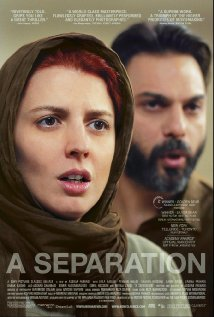

"Kebohongan dan kebenaran adalah alat dan konstruksi. Satu-satunya yang nyata itu hanyalah konsekuensi."
Pertama kali saya mau menonton film ini, saya ketiduran setelah beberapa menit awal. Tidak tahu kenapa, tapi menit-menit awal begitu membingungkan karena dimulai dengan sepasang suami-istri di pengadilan, kemudian dilanjutkan dengan dialog di dalam sebuah rumah antara beberapa orang yang saling sahut-menyahut dengan bahasa arab. Cukup membosankan bagi penonton yang tidak sabar.
Cerita singkatnya: ada seorang istri, Simin, yang ingin pindah ke luar negeri untuk mencari kesempatan hidup yang lebih baik dari kotanya yang sekarang, dan ingin supaya suaminya, Nader, dan anaknya, Termeh, ikut. Tapi suaminya tidak mau karena harus merawat bapaknya yang sudah tua dan sakit. Si istri kemudian mengajukan gugatan perceraian tapi ditolak oleh suaminya dan hanya bilang "kalau mau pergi, ya, pergi saja".
Karena masalah tersebut, si istri tinggal di rumah ibunya dan si suami terpaksa harus mencari pembantu untuk menjaga ayahnya yang tua dan sakit di rumah, sementara dia bekerja.
Permasalahannya timbul saat pembantu baru yang dipekerjakan agak ceroboh saat merawat dan memperhatikan ayah dari tuan rumah.
Bagi saya, film ini mengangkat tentang kebohongan di dalam sebuah kultur dan masyarakat beragama Islam, di Iran. Apakah anda akan berbohong demi keselamatan anda sendiri atau tidak berbohong karena itu adalah dosa?
Adegan yang memperlihatkan bagaimana kuatnya keagamaan mereka adalah saat si pembantu bingung mau membantu mengganti pakaian ayah si tuan rumah, dan menyelesaikan kebingungannya itu dengan menelepon imam/konselor keagamaan, dengan bertanya apakah dia boleh membantu mengganti baju pria tua yang bukan muhrimnya atau tidak.
Kebohongan pertama adalah saat si pembantu, Razieh, bekerja tanpa permisi dari suaminya, yang mana merupakan suatu keharusan dalam masyarakat Islam Iran.
Kebohongan kedua adalah saat si suami tidak mengakui di pengadilan bahwa dia mengetahui bahwa si pembantu hamil saat diterima bekerja di rumahnya.
Selain kebohongan di film ini juga diperlihatkan kejujuran dari keduanya, si suami dan si pembantu.
Kejujuran pertama adalah saat si suami mau menuntut balik si pembantu karena mencelakai ayahnya. Untuk menuntut si pembantu, ayah si suami harus melakukan pemeriksaan medis. Tapi setelah di periksa, si suami membatalkan karena ada kemungkinan cedera yang ada di badan ayahnya adalah karena jatuh di kamar mandi. Jika si suami mau, dan memang berniat tidak baik pada si pembantu, dia bisa saja pura-pura tidak tahu dan menganggap memar/luka itu adalah karena jatuh dari tempat tidur akibat diikat oleh si pembantu.
Kejujuran kedua adalah saat si suami ditanya balik oleh anaknya, apakah ia benar-benar tidak mengetahui bahwa si pembantu hamil atau tidak.
Kejujuran ketiga ada di akhir film.
Secara sekilas, alur cerita film ini sangat sederhana. Tapi dengan akting yang bagus dari para aktor dan aktris, kultur yang berbeda, dan kepandaian sutradara memainkan alur yang serial tapi sedikit tertutup-tutup membuat penonton menjadi penasaran dan terdiam. Mengingatkan saya pada semua film Alfred Hitchock, ceritanya sederhana, anda (mungkin) tahu siapa yang bersalah dan benar tapi anda tetap menontonnya sampai akhir.
Salah satu kekurangan dan sekaligus kehebatan dalam film ini adalah efek musiknya. Kekurangannya adalah tanpa atau sedikitnya efek musik dalam film ini membuatnya sedikit hambar, tapi malah tanpa efek musik para aktor telah bisa memperlihatkan emosinya (tidak seperti kebanyakan film Hollywood yang memperkuat emosi atau keadaan dari sebuah adegan dengan efek musik).
Sekarang setelah membahas filmnya saya ingin membahas yang di dalamnya, terutama masalah etika berbohong dan jujur.
Kenapa kita harus jujur dalam bermasyarakat?
Ada banyak alasan untuk hal ini, tapi sederhananya adalah kejujuran membawa kepercayaan. Kepercayaan mengangkat kredibilitas seseorang dalam masyarakat. Yang mana jika dikaji lebih dalam lagi, berkata jujur (atau bohong) adalah suatu hal yang dilakukan manusia demi kepentingannya sendiri.
Apakah orang jujur karena mereka takut akan dosa atau karena memang orang tidak mau dibilang pembohong?
Jauh sebelum adanya agama, hal-hal tentang mana yang benar (jujur) telah dipraktikan dalam masyarakat. Dahulu, pedagang yang tidak jujur akan dijauhi pembeli. Pedagang yang menjual kata-kata manis tentang barangnya, tapi ternyata barangnya memiliki kualitas rendah akan dianggap sebagai penipu. Ada teori yang mengatakan bahwa bahasa itu sendiri terbentuk dan tersebar karena tingkat saling percaya yang tinggi [1]. Jadi apakah benar bahwa agama telah memonopoli pembentukan konstruksi kejujuran dalam sosial? Bukankan kejujuran dengan alasan dosa akan berbentuk kejujuran palsu? Jujur karena ketakutan akan dosa dan neraka, bukan jujur karena itu yang seharusnya dilakukan sebagai manusia.
Apakah ada saatnya berbohong itu dibolehkan?
Berbohong demi kebaikan, atau dalam bahasa Inggris dikenal dengan istilah white lie, tampak seperti benar dan baik, tapi apakah selalu demikian? Topik ini telah dan sering diperdebatkan oleh filsuf-filsuf bidang etika dan tidak akan bisa dijawab dengan singkat saja.
Untuk lebih jelasnya saya akan memberikan beberapa contoh kasus yang mempertanyakan apakah anda harus berkata jujur atau tidak.
Ingat atau pernah nonton film Inglourious Basterds? Adegan di mana seorang perwira SS mengunjungi sebuah rumah yang disangka menyembunyikan sejumlah wanita Yahudi? Dalam adegan tersebut anda berperan sebagai pemiliki rumah yang benar menyembunyikan sejumlah Yahudi di bawah rumah anda. Anda tahu konsekuensi dari tidak berkooperasi dengan tentara SS adalah dibunuh, dan mengatakan yang jujur tentang keberadaan meraka akan mengakibatkan sejumlah orang akan dibunuh. Apa yang akan anda jawab bila perwira SS bertanya "Apakah anda mengetahui ada Yahudi yang lari atau bersembunyi di sekitar sini?"
Konteks kedua adalah dengan cerita yang sama seperti di atas, tapi saat ini perwira SS menodongkan pistol ke kepala anda sambil bertanya "Apakah anda mengetahui ada Yahudi yang lari atau bersembunyi di sekitar sini? Jika anda berbohong, dan saya tahu anda berbohong, saya akan menembak kepala anda." Apa jawaban anda?
Anda diundang makan malam ke rumah seorang teman yang baru anda kenal. Setelah makan malam selesai, walau dengan terpaksa menghabiskan karena ada makanan yang terlalu asin dan ada yang hambar, tuan rumah bertanya, "Apakah makanannya enak?" Bagaimana jawaban anda?
Waktu kecil saya dan tiga sepupu lainnya bermain scrablle. Suatu saat sepupu perempuan saya keluar sebentar dari permainan. Sementara kami menunggu, saya mengintip kotak-kotak huruf milik kakak yang sedang keluar. Saat dia kembali, dia bertanya "Kamu melihat kotak huruf punya kakak ya?" Saya kemudian menggeser duduk saya dari posisi awalnya dan menjawab, "Selama saya duduk di sini, saya belum pernah melihat kotaknya kakak." Apakah saya berbohong atau jujur?
--
[1]http://id.wikipedia.org/wiki/Asal_mula_bahasa#Permasalahan_reliabilitas_dan_kecurangan